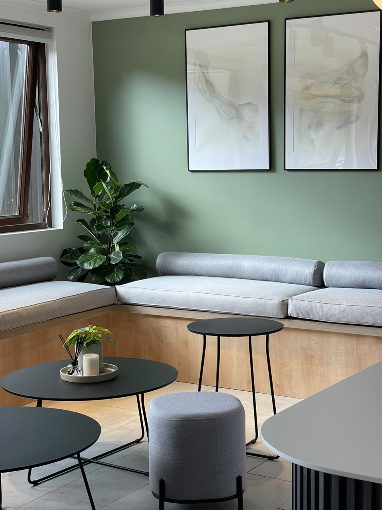
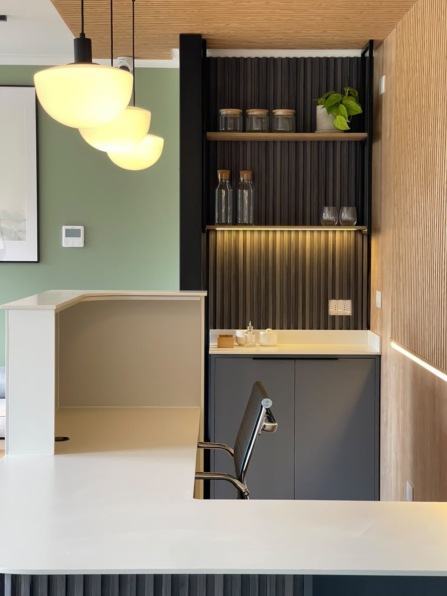
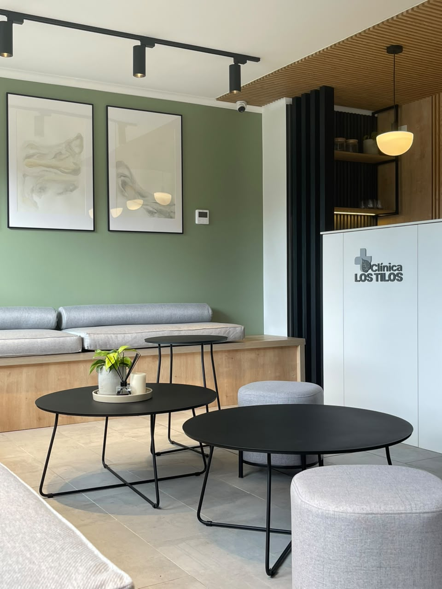
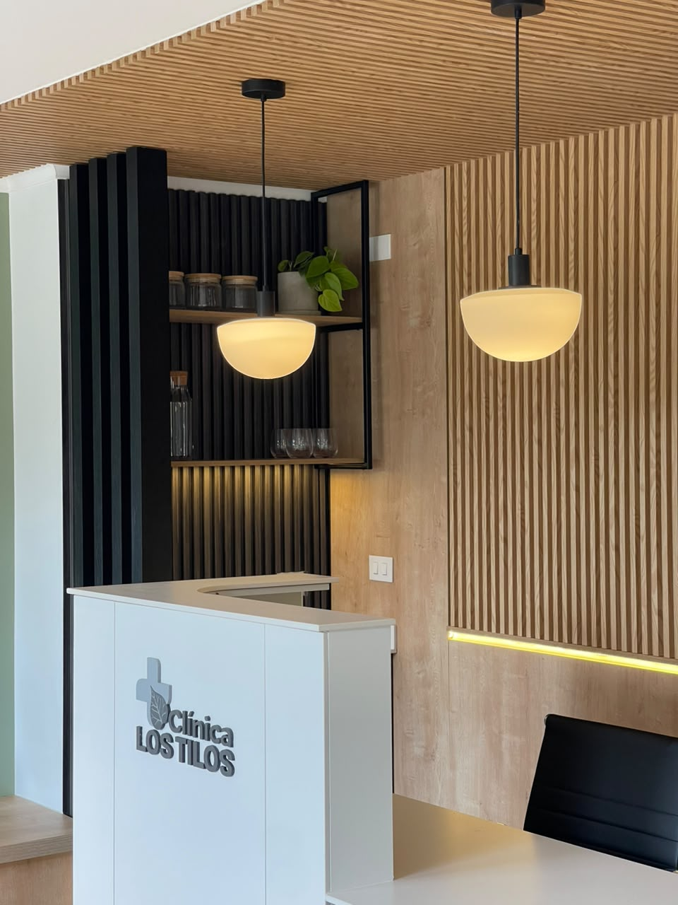
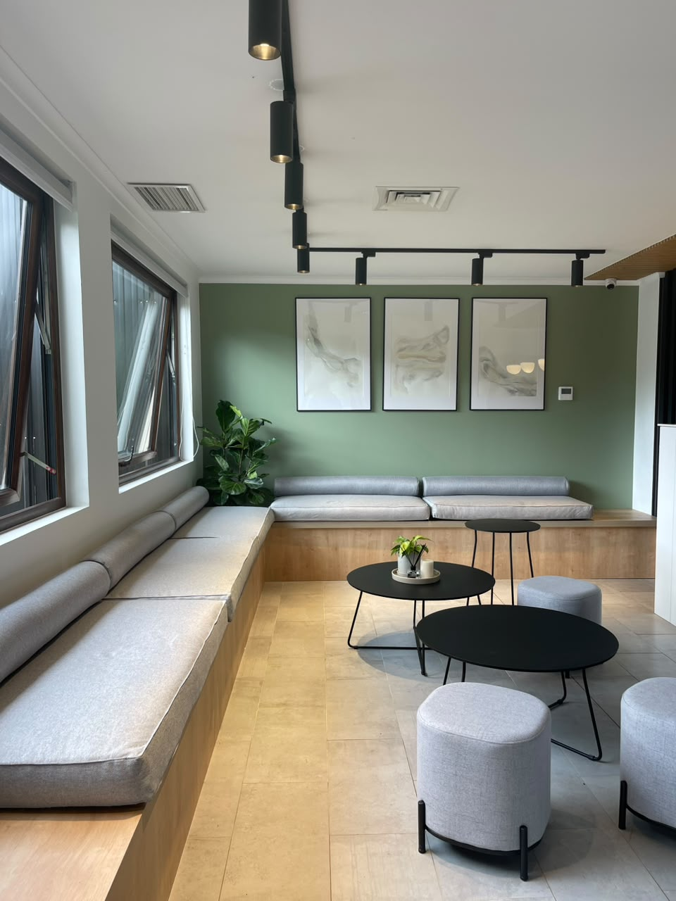
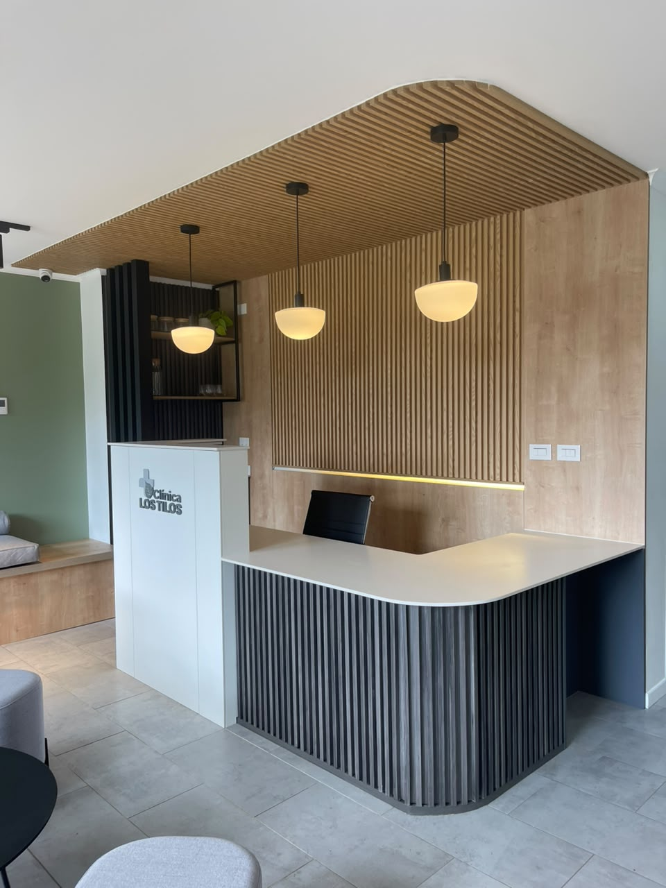
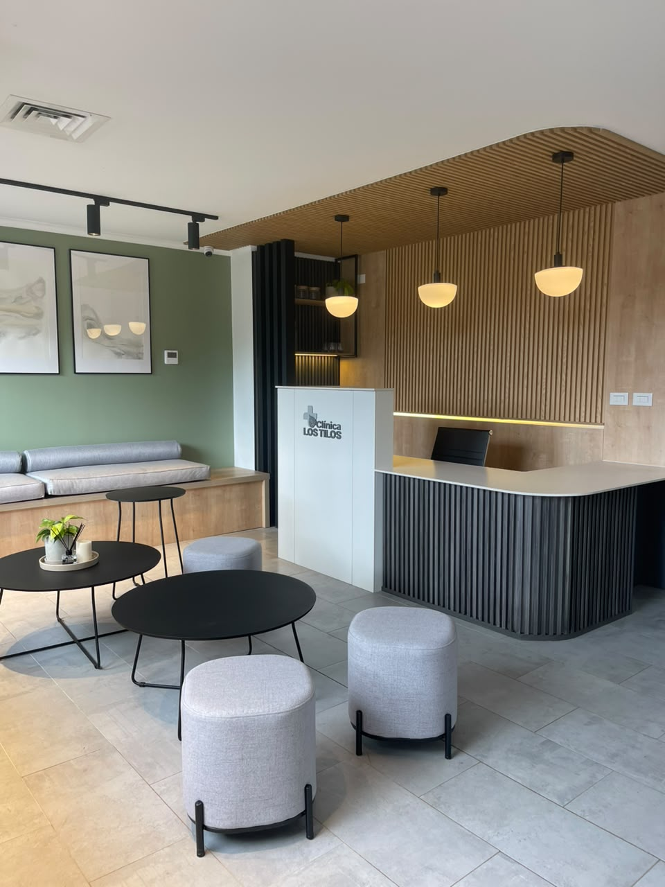
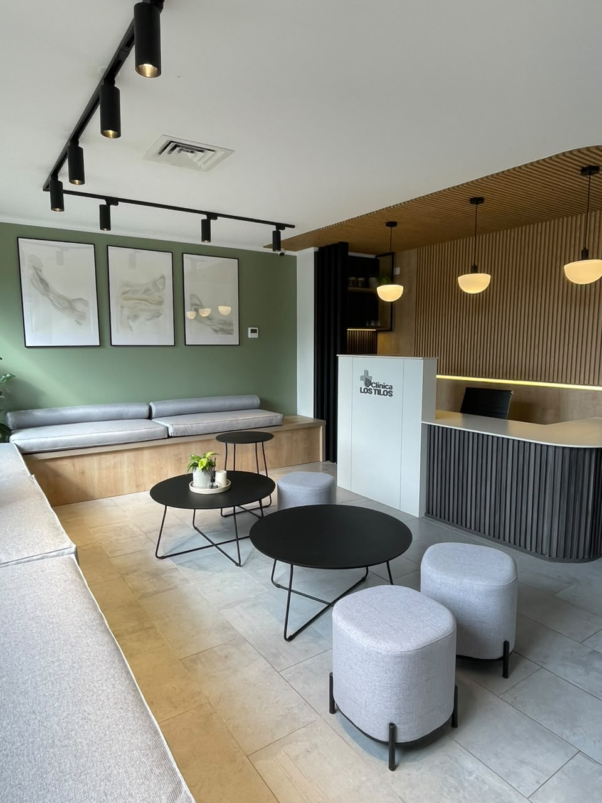
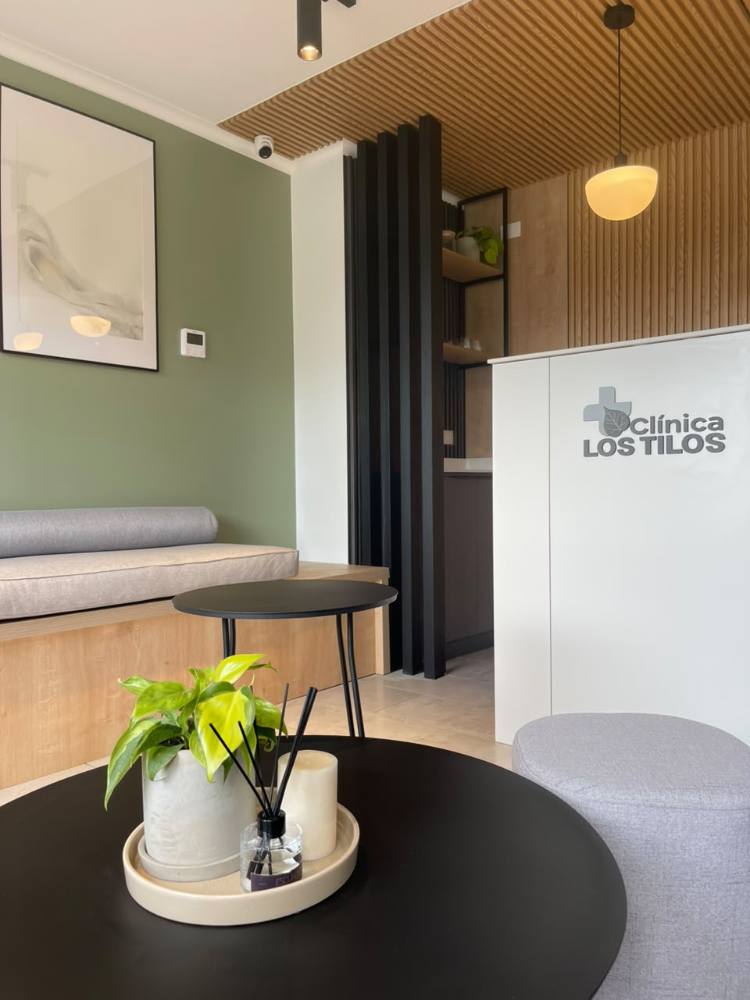

Clínica Los Tilos
Un interior para atención en salud que equilibra calidez, claridad y una presencia contemporánea desde el primer encuentro.

El proyecto
Una pausa serena antes de cada consulta.
La propuesta organiza las áreas de espera a partir de una paleta suave, luz natural y materialidades cálidas. Los recorridos se leen con facilidad y el mobiliario acompaña la permanencia sin sobrecargar el ambiente.
Desde una mirada de neuroarquitectura, cada decisión busca dar continuidad entre orientación, confort y una experiencia de bienvenida más humana.







